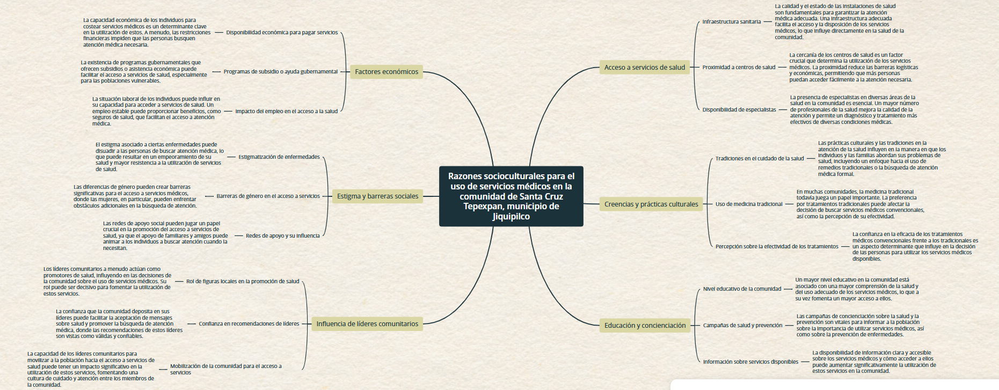

CALIDAD DE LA ATENCIÓN
La calidad de la atención es el grado en que los servicios de salud para las personas y las poblaciones aumentan la probabilidad de resultados de salud deseados. Se basa en conocimientos profesionales basados en la evidencia y es fundamental para lograr la cobertura sanitaria universal. A medida que los países se comprometen a lograr la salud para todos, es imperativo considerar cuidadosamente la calidad de la atención y los servicios de salud.
SERVICIOS DE CALIDAD
La atención sanitaria de calidad se puede definir de muchas maneras, pero hay un creciente reconocimiento de que los servicios de salud de calidad debe ser:
- Eficaz – proporcionar servicios de salud basados en evidencia a quienes los necesitan;
- Seguro – evitar daños a las personas para las que el cuidado está destinado;
- Centrado en las personas: proporcionar atención que responda a las preferencias, necesidades y valores individuales.
- Oportuno – reducción de los tiempos de espera y a veces de retrasos dañinos;
- Equitativo – proporcionar atención que no varía en calidad debido al género, la etnia, la ubicación geográfica y la situación socioeconómica;
- Integrado – proporcionar atención que pone a disposición toda la gama de servicios de salud a lo largo del curso de la vida;
- Eficiente: maximiza el beneficio de los recursos disponibles y evita el desperdicio.
Para aprovechar los beneficios de una atención médica de calidad, los servicios de salud deben ser:

